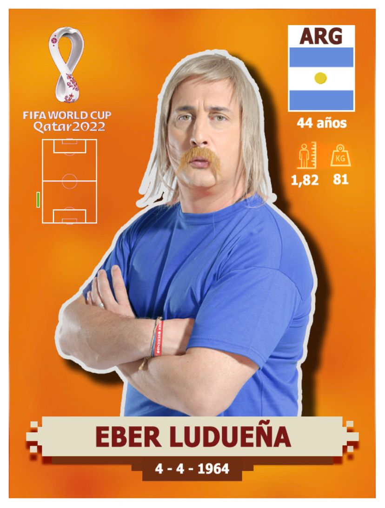

Curriculum Vitae

Éber Ludueña
Luego del Diego y Leo, el jugador mas famoso de la Argentina es "La Motocierra Humana" Éber Ludueña, éste mediocampista de contencion, famoso por usar la camiseta numero "4", a sus tiernos 44 años de edad ya cuenta con una gran experiencia dentro del mundo del futbol.
Estadisticas
- 138 - Partidos
- 74 - Amonestaciones
- 37 - Rojas directas
- 1 - Gol (de penal, en su tercer partido de despedia)
- 1 - Tiro en el palo (banderin del corner dercho)
- 1 - Rabona mal tirada
- 17 - Fracturas ajenas (5 expuestas)
- 3 - Fracturas a compañeros propios
Títulos
- Balón de Oro de la provincia de Santa Fe (1992)
- Subcampeon provincial de tetris
- Electricidad de automotor
Peores insultos que recibió
- "Corréte que estan jugando"
- "Sos más lento que patada de astronauta"
- "Movéte que te va a mear un perro"
- "Tas' más duro que zapato arriba del techo"
- "4, te p*tearia pero no sé quien sos"
Fuente
Portafolio